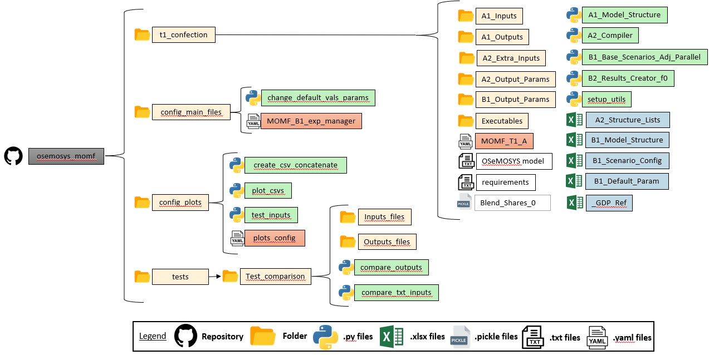

Welcome to MOMF Documentation!
Is energy system modeling tools that identify features of a robust energy policy: a policy that performs well relative to alternatives. The tools are based on the Open Souce Modeling System (OSeMOSYS), are named the Multipurpose OSe MOSYS-based Framework (MOMF).
The MOMF can support energy decarbonization planning exercises, and it is suitable to address the uncertainty involved in a decadeslong process. It compares possible NDP futures -quantitative combinations of uncertainties and sectoral policy objectives- to a business-as-usual (BAU) scenario without decarbonization. The MOMF also evaluates actors within a country, including the fiscal impacts of decarbonization, following the best practices of applied energy modeling for policy support.
Currently, MOMF exclusively accommodates the GNU MathProg variant of OSeMOSYS.